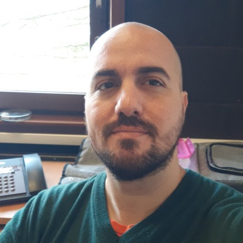
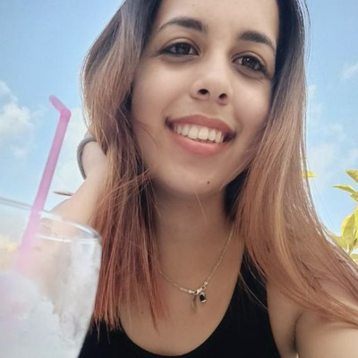
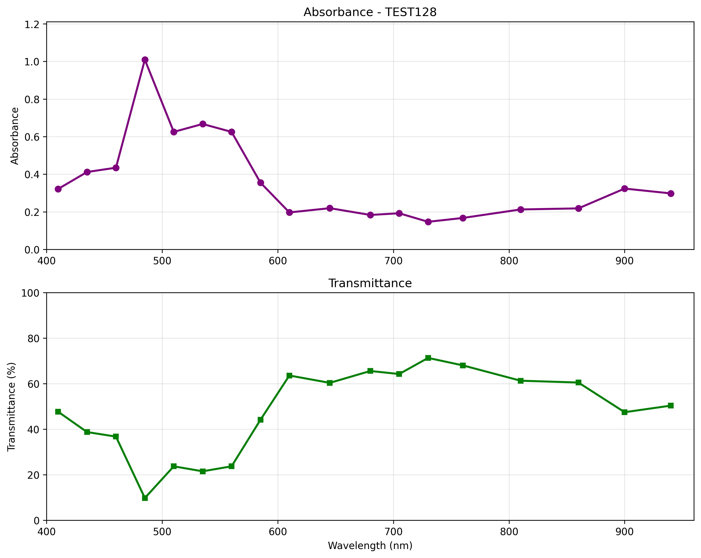
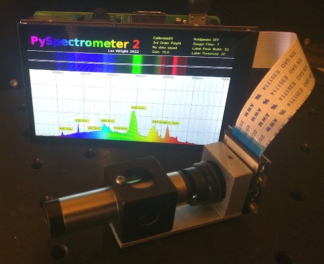

Microorganisms as Indicator of Marine Pollution: Challenges for in situ monitoring
Soumis à Environmental Monitoring and Assessment en avril 2026. En révision par les pairs depuis le 14 juin 2026.
 CubanWaterLab
ESENFR
CubanWaterLab
ESENFR
Soumis à Environmental Monitoring and Assessment en avril 2026. En révision par les pairs depuis le 14 juin 2026.
Soumis à Review of Scientific Instruments en octobre 2026.
En préparation pour IEEE Sensors Letters · 2026.
2026.
2026.
Accepté pour le Séminaire international « Intersectionnalité, équité et politiques sociales ». À présenter en novembre 2026.
Présentée à la 5e Convention scientifique internationale de l’UCLV (atelier « Comunidades 2025 ») · 20–24 octobre 2025.
Les dépôts et portfolios techniques qui soutiennent le travail expérimental de CubanWaterLab.
Portfolio du cursus international de fabrication numérique à l'Université Libre de Bruxelles.
Voir le portfolio →
Portfolio du cursus international de fabrication numérique à l'Université Libre de Bruxelles.
Voir le portfolio →
Portfolio du cours « How To Make (almost) Any Experiments Using Digital Fabrication », ULB.
Voir le portfolio →
Logiciel pour un spectrophotomètre portable à bas coût (capteur AS7265x + ESP32), avec interface graphique et export CSV.
Voir le dépôt →
Spectromètre optique DIY avec caméra Raspberry Pi, étalonnage par régression polynomiale et mode cascade pour le suivi spectral en temps réel.
Voir le dépôt →